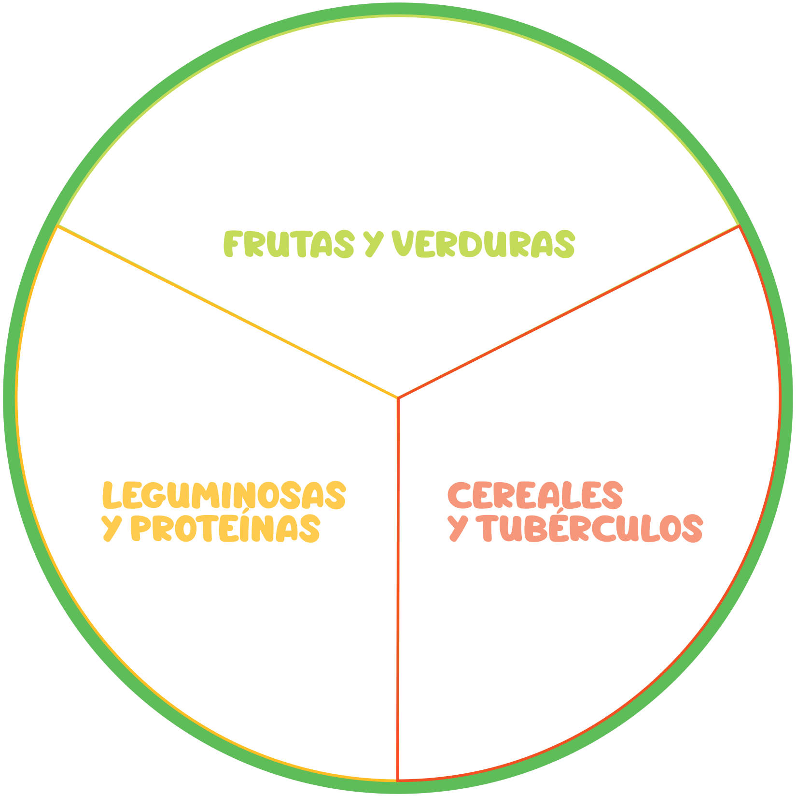

{{i}}
El Plato del Bien Comer es una guía que nos muestra cómo llevar una dieta e ilustra los tres grupos de que debemos consumir según las características y nutrimentos que nos aportan.
Los tres de alimentos son los siguientes.
1. Frutas y .
2. y tubérculos.
3. Leguminosas y de orígen animal.
Al consumir una combinación de estos alimentos cada día podemos lograr que nuestra diaria sea y balanceada, y de esta manera mantenernos .
